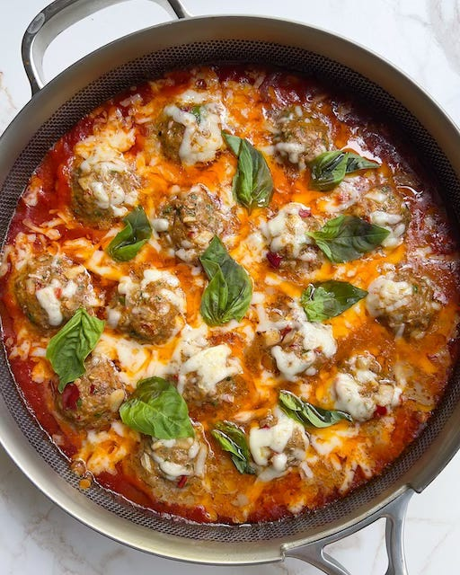

Calabrian Chili Meatballs

Description
Calabrian Chili Meatballs
Ingredients
- 1lb ground beef
- 3tbsp Calabrian chili from jar
- 1/2 yellow onion
- 4 cloves garlic
- 1/4c breadcrumbs
- 1 egg
- 1tsp salt
- 1tsp oregano
- 24oz jar marinara sauce
- 1c shredded mozzarella
Steps
- Preheat oven to 375 degrees
- Add ground beef, Calabrian chilis, chopped onion, minced garlic, parsley, breadcrumbs, egg, salt, and oregano to a bowl and mix
- Heat up marinara sauce in a large oven-safe pot on medium heat
- Add meatballs
- Cover and bake for 13 minutes
- Top with cheese and bake for another 8-10 minutes